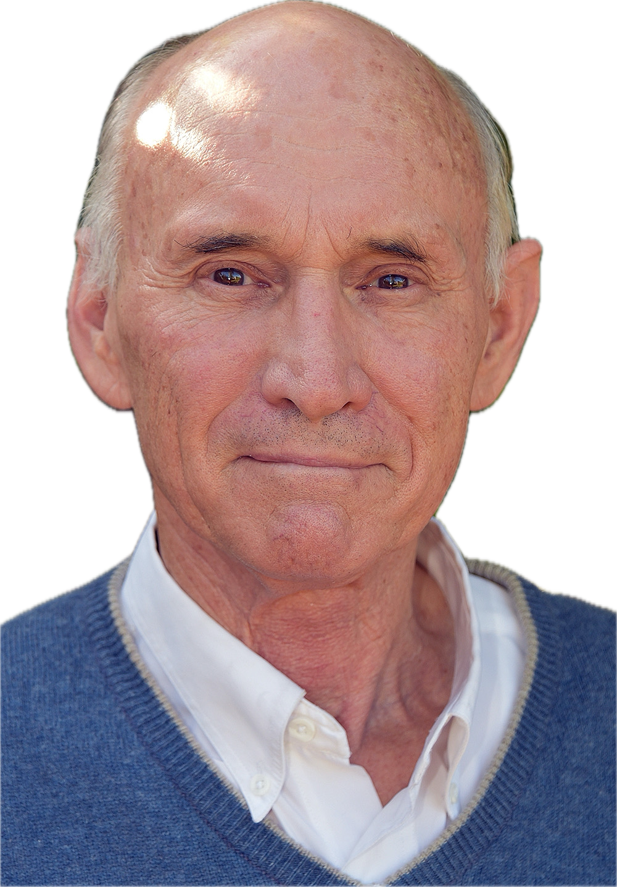

Showing 87 of 87 publications
Emeritus Professor, Flinders University of South Australia
From Chromosomes to Crime Scenes — Six Decades of Discovery (1966–present)

This page traces the scientific life of Leigh A. Burgoyne (born 22 September 1939 in Adelaide, South Australia), biochemist, inventor, and Emeritus Professor at Flinders University of South Australia. From his PhD in Adelaide in the 1960s to his most recent publication in 2025 at the age of 84, his career has spanned six decades and touched fields as diverse as enzyme chemistry, the fundamental structure of chromosomes, forensic science, and fungal genomics. He continues to research today.
Two achievements stand out. In 1973, working with his PhD student Dean Hewish, Leigh made a discovery that helped reveal how DNA is packaged inside every living cell. The work was so significant that Francis Crick described it as a “breakthrough” on BBC Radio, and that Roger Kornberg cited it as foundational evidence when developing the nucleosome model that earned Kornberg the 2006 Nobel Prize in Chemistry. Two decades later, he invented the FTA card, a small piece of chemically treated paper that revolutionised how DNA samples are collected and stored worldwide, from crime scenes to newborn screening programmes to wildlife conservation in the field.
This page is both a scientific record and a family tribute. The career arc below tells the story of how each phase of research has built on what came before. Every publication is linked to a detailed summary. Whether you are a molecular biologist or simply someone who wants to understand what Leigh has devoted his life to, we hope this page does justice to a remarkable and ongoing career.
Over the course of his career, Leigh's work has been recognised by scientific organisations, industry bodies, and the South Australian government. These awards span the full range of his contributions, from fundamental discovery to technological innovation.
Click to browse all 87 publications with co-author and theme filters.
Science is never a solo endeavour. Over six decades, Leigh worked with a wide network of students, postdoctoral researchers, and colleagues across four continents. Some were brief but pivotal partnerships; others spanned decades. The following are the long-term or particularly significant collaborators whose names appear alongside his in the published record.